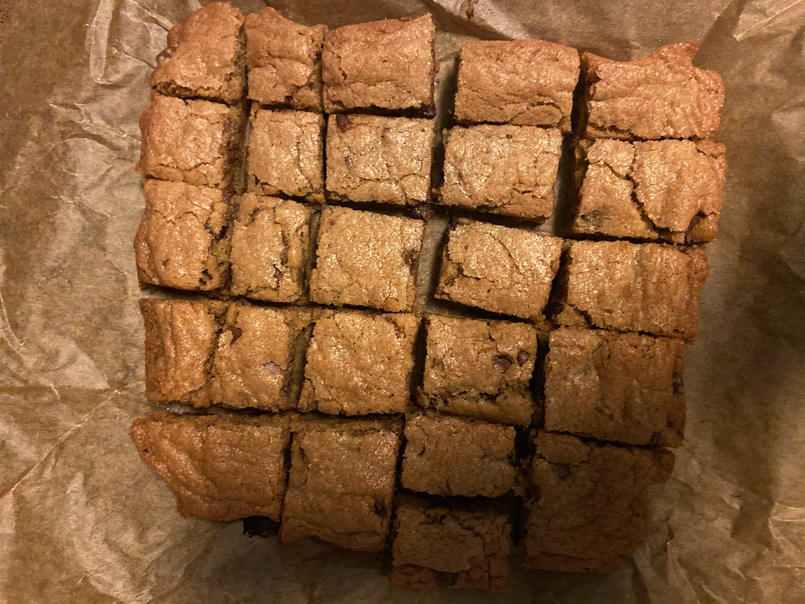
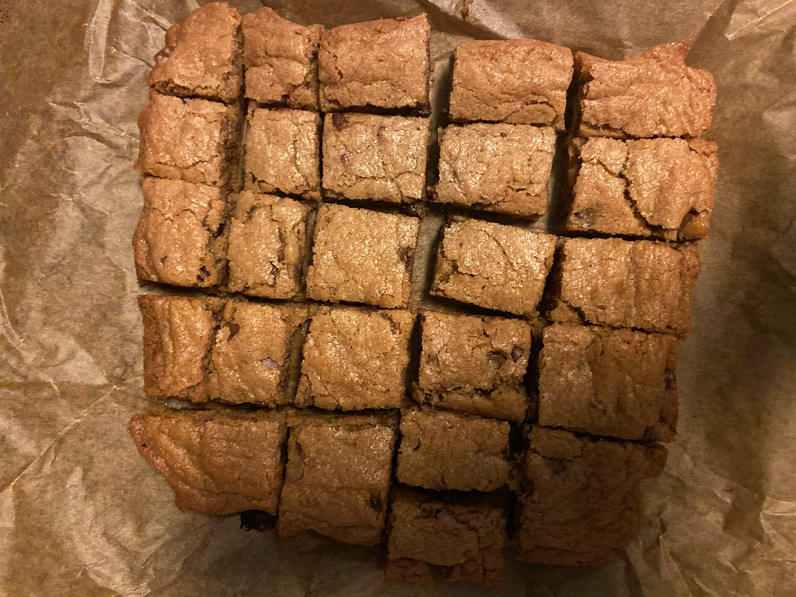
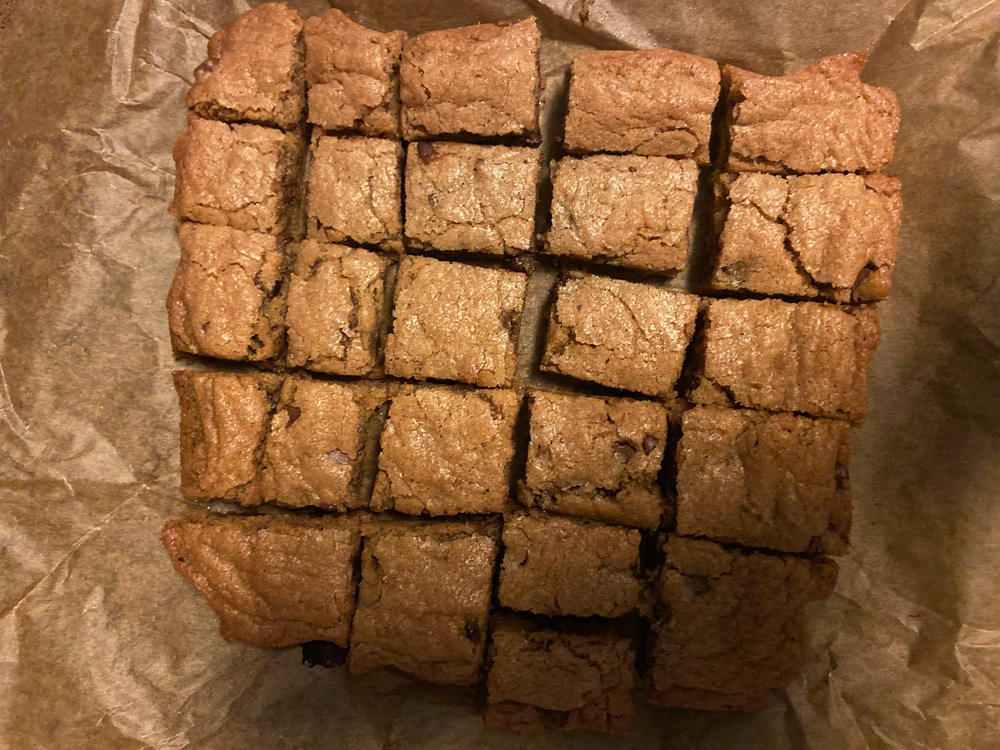

I really wanted to make Trader Joe's pumpkin oatmeal cookies for this assignment, but upon entering Trader Joe's I was unable to locate them. After speaking with a very kind staff member I was informed that they are no longer selling the pumpkin oatmeal cookies because they were only a seasonal item. You can probably assume I was saddened by this news, espeically due to the fact that it is merely the beginning of October and pumpkin is very much still in season. However, I found a reasonable substitute and we are going to give it a shot.
The first step of making Trader Joe's Blondie Bars is in fact going to the motherland herslef: TJ's and securing the bag (or box). This step is crucial because TJs can be a very distracting place, and it is crucial that you stay focused. For example, I am a professional, and yet I was still distracted by the cheese section for about 10 minutes. Also, make sure you talk to the employees there, as they are all overly kind and will probably improve whatever kind of day you are having that led you to baking blondies.
The second step is when you actually begin preparing the blondie's themslves. First and foremost, preheat the oven to 350 degrees. Then take an 8x8 brownie pan and use a little bit of butter to grase the edges of it. You can also line the pan with parchment paper if you prefer.
Next, you are going to melt your stick of butter in the microwave. Then, in a large mixing bowl, whisk the melted butter and the egg together. Slowly begin to add in the Trader Joe's Blondie Bar Baking Mix and fold it into the butter and egg mixture. After the mix is fully combined, this is when you may mix in some extra chocolate chips if you like to live on the wild side of life.
Pour the batter evenly into the pan and place a couple more chocolate chips on top for ~garnishing~ Bake until they are golden brown, this should take about 30 minutes. Remove them from the ove, and let them cool completely before cutting them.
After you slice your blondies, plate them accordingly as presentation is everything. Make sure to share your blondies with others to brighten their day.
